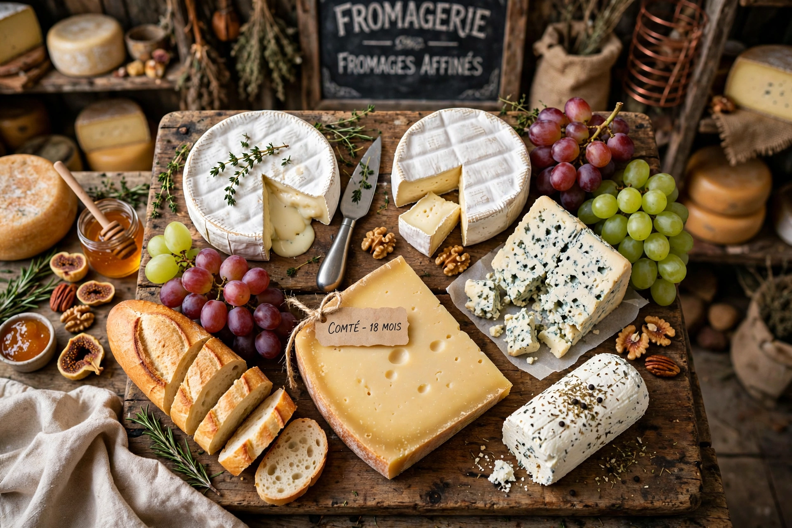

List of French cheeses

France produces hundreds of cheese varieties; dozens hold AOC/AOP protected status.
This is a list of French cheeses. France is renowned for cheese diversity — Charles de Gaulle famously quipped about governing a country with hundreds of cheeses (often quoted as 246 or more). Many are protected by Appellation d'origine contrôlée (AOC) / AOP designations.
Notable cheeses
- Brie — soft cow's-milk cheese from Île-de-France; Brie de Meaux is AOC.
- Camembert — soft bloomy-rind cheese from Normandy.
- Roquefort — blue sheep's-milk cheese aged in caves near Roquefort-sur-Soulzon.
- Comté — hard cooked cow's-milk cheese from the Jura.
- Reblochon — soft washed-rind cheese from Savoie, used in tartiflette.
- Munster — strong washed-rind cheese from Alsace-Lorraine.
- Époisses — pungent washed-rind cheese from Burgundy, washed in marc.
- Cantal — one of France's oldest cheeses, from Auvergne.
- Saint-Nectaire, Morbier, Beaufort, Tomme de Savoie, Pont-l'Évêque, Livarot, Maroilles, Crottin de Chavignol (goat), Banon, Fourme d'Ambert (blue), Bleu d'Auvergne, Mimolette, Langres, Chaource, Neufchâtel, Brocciu (Corsican).
Protection
AOC status, granted since the early 20th century (Roquefort first, 1925), regulates milk source, method, and region. See AOC and cheese.